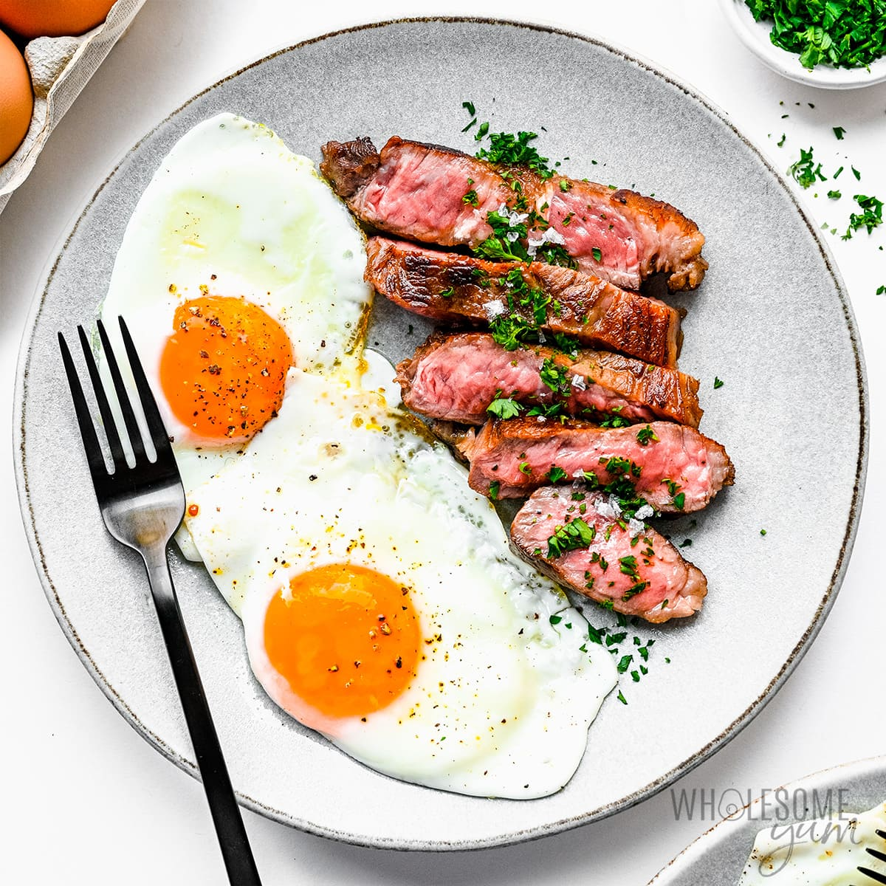

Steak and eggs

Super simple S + E
This is made to be quick, easy, nutritious and healthy
Ingredients
- 4-6 farm fresh eggs
- 300g grass fed organic rib fillet steak
Instructions
- Heat webber bbq or cast iron pan to a high heat
- Throw steak on and cook 4 minutes a side for medium or to desired level
- Cook eggs in remaining steak fat, add grass fed butter if needed and fry until desired level
- Enjoy your perfectly balanced seed oil free breakfast
homepage